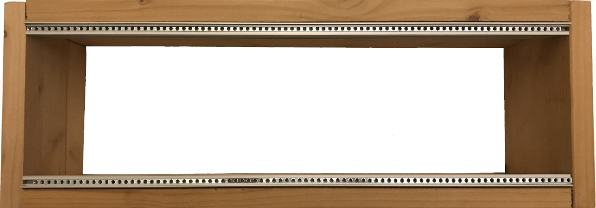
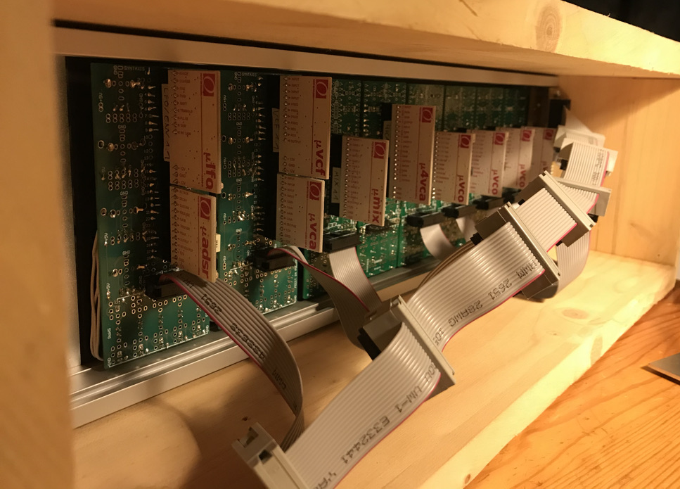
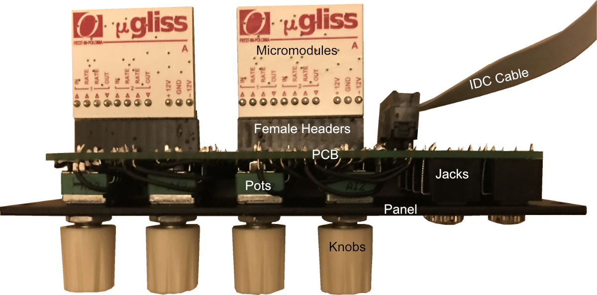
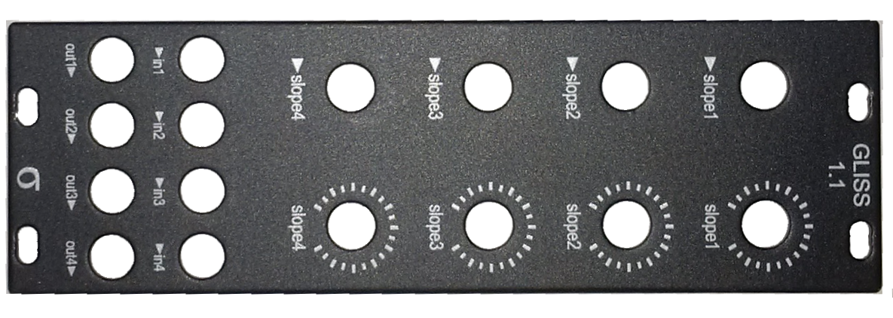
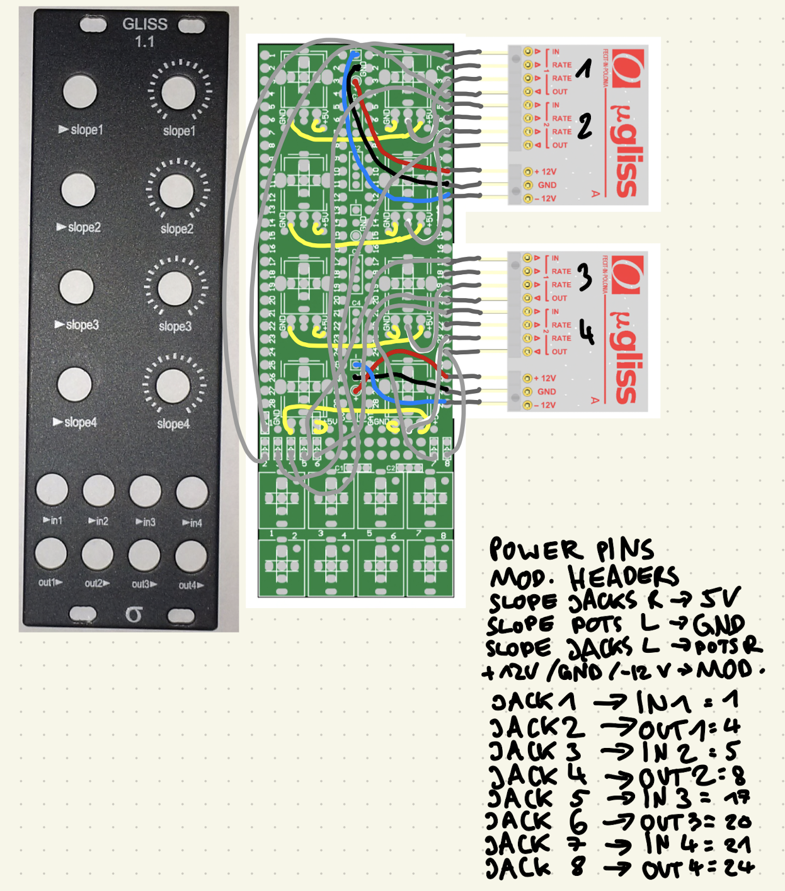
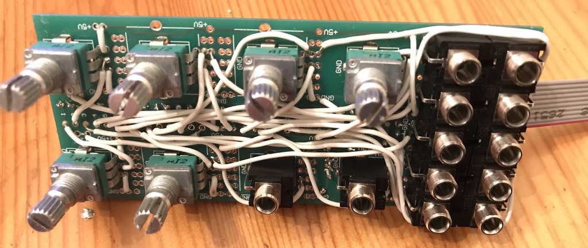
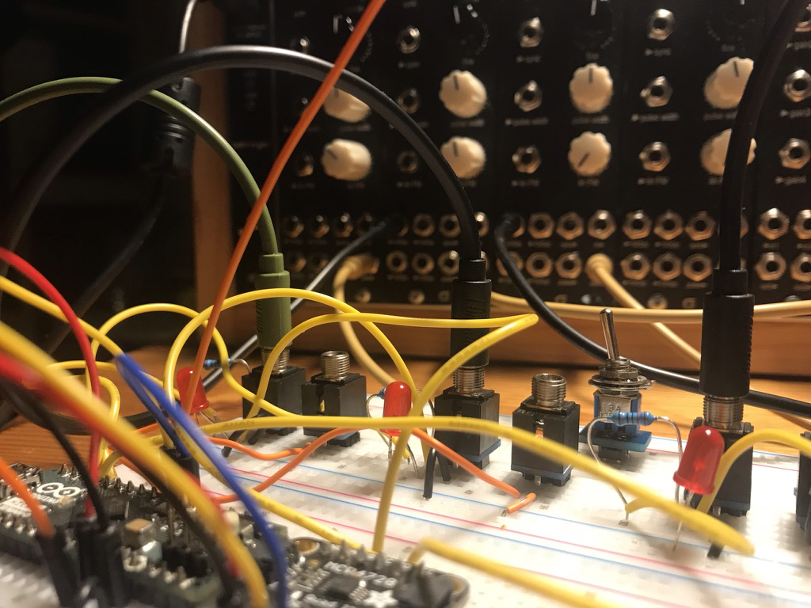

DIY Modular Synth
November 28, 2021
In my post "A Macro View on Analog Synthesis", I used the Syntaxis µModules to quickly set up synth circuits. As patching with electronic cables is a quite fiddly, I wanted to build them into a modular synthesizer.
What is a modular synthesizer?
A modular synthesizer is sound and music making device that consists of individual modules that can be connected to each other. The one I've built looks like this:

If you look closely, you can see that there are 11 individual modules. The holes are jack sockets that can be used to connect modules via cables. In this state, the synth does not make a sound, as nothing is connected.
As the definition of a modular synthesizer does not include how the modules are built or how they should be sized, you can either use your own sizes or, like I did, use a standard format like eurorack.
The eurorack standard
The most widely used format for modular synthesizers is the eurorack standard. I decided to use this format because it has a large community and many available modules and kits.
When building for the eurorack standard, there are few important things:
Horizontal Pitch
Horizontal Pitch, in short HP, is the unit that is used for module width. One HP is 0.2" or 5.08mm. The modules I've built are 4, 8 or 10HP. More info.
Rack Units
The height of an eurorack module is measured in U, which is a standard for 19" racks. One U is 1.75" or 44.45mm. Most eurorack modules have a height of 3U, but there are also 1U modules. More info.
Cases and Rails
To hold the modules in place, metal rails are used. For one row of modules, you need 2 rails that are spaced 3U apart. I used those rails + threaded strips To get the 3U distance exactly right, you can use any two panels.

It's not pretty but it works. In the future I might build a better looking case.
Power Supply
The modules are powered with a dual power supply running at -12V / +12V. I did not want to build a power supply myself, so I bought this one. It uses so called flying bus cables to connect the modules to. From the back, the synth looks like this:

The modules are connected via IDC ribbon cables, with either 10 to 16 or 16 to 16 pins, depending on the module. You can either build them yourself or buy them. This is the pin standard:

As most modules use unshrouded 2x5 or 2x8 male header pins, you have to make sure to plug them with the red stripe on the side of -12V.
Patch Cables
The eurorack standard uses 3,5mm mono cables and jacks to make connections. I bought these, as they are color coded by length.
Modules
This is a module from the side:

In the picture above, we see the common parts of any module.
Panels
Panels are the faceplate of a module, they
- label the controls
- lock the controls in place (so no force is applied to the solder joints)
- are used to screw the module onto the case
The 2 most commonly used materials are aluminum and FR4 (PCB material). In my case I used aluminum, as Syntaxis sells them already labeled.

Controls
The three most common control elements are:
- Pots (Potentiometers) with Knobs
- Jacks
- Switches
I used
- Alpha 9mm pots B100k Pots T18 with Davies 1900h Clone Knobs
- Thonkiconn Jacks
- Sub Miniature Toggle Switches SPDT ON ON
PCB
The PCB (Printed Circuit Board) is used to solder the controls to. After a failed attempt with copper stripboards, I was happy to see Syntaxis selling 3 different generic PCBs in the eurorack format:
You can click on the links under the pictures to download the manuals. In essence the PCBs are designed to
- allow putting pots, jacks or switches in any of the 8-10 positions on the upper area of the PCB
- allow putting jacks or switches in any of the 8-10 positions on the lower area of the PCB
- connect jacks to ground automatically
- be able to implement the rest of the circuit with wires
- connect eurorack power headers, either 10 pins with +5V regulator or 16 pins without (not possible 10hp PCB)
Micromodules
The micromodules provide the actual functionality of the module. They are inserted on the back of the PCB. I used female headers to be able to remove the micromodules for other uses. I already wrote a whole post on these modules
Assembly
As I did not design my own modules, I could wire the components by following the instructions provided by Syntaxis. The only module that had no instructions was the Gliss module, for which I created my own instructions:

If you plan to do the same, make sure to follow the PDFs, as the images in the shop contain some errors!
To put all those components together, I followed the following steps:
- Solder Power circuit
- 2x8 pin headers for 8hp
- 2x5 pin headers + solder 79L05 regulator + 2 1µF capacitors for 10hp
- Solder female header of appropriate length
- Solder the cable connections, leave room for controls
- Add controls (don't solder yet)
- Add the panel with screws
- Solder Controls
- Add micromodule(s) + plug
- Test for shorts, then test without micromodules if +12V / -12V / 5V are correct
After wiring, a module without panel looks like that:

Cost
When buying ready made modules, you often pay a lot of money. Cases can also get quite expensive. When going DIY (or at least part DIY), you can get away much cheaper:
Case
- 30€ for rails and threaded strips
- a few € for the wood
Modules
- 10€ for IDC cables
- a few € for the female headers
- 80€ for pots
- 60€ for jacks
- 60€ for the knobs
- 40€ for PCBs
- 70€ for Panels
- 325€ for uModules
~650€ total = ~72€ / module, ~36€ without uModule(s).
As expected, the price for one module is not very high, compared to the average eurorack module price range. Another advantage of the micromodules (which make half the price of a module) is that they can be reused in other modules.
Future Outlook
So far I am happy to have filled up 84HP rails. I am planning to add more modules, like polyphonic MIDI to CV (as I already conceptualized in a previous post). I also want to write a post about actually using the synth, showing some example patches.
